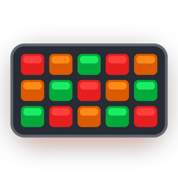
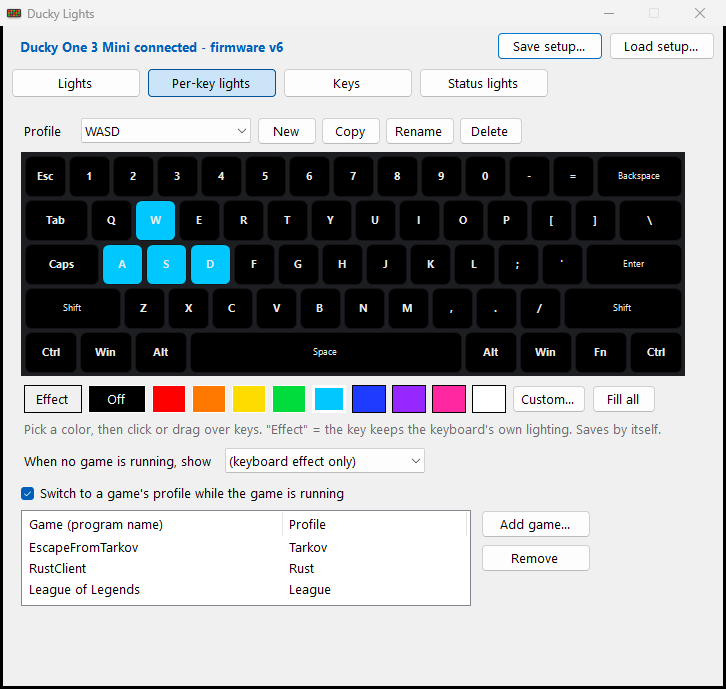
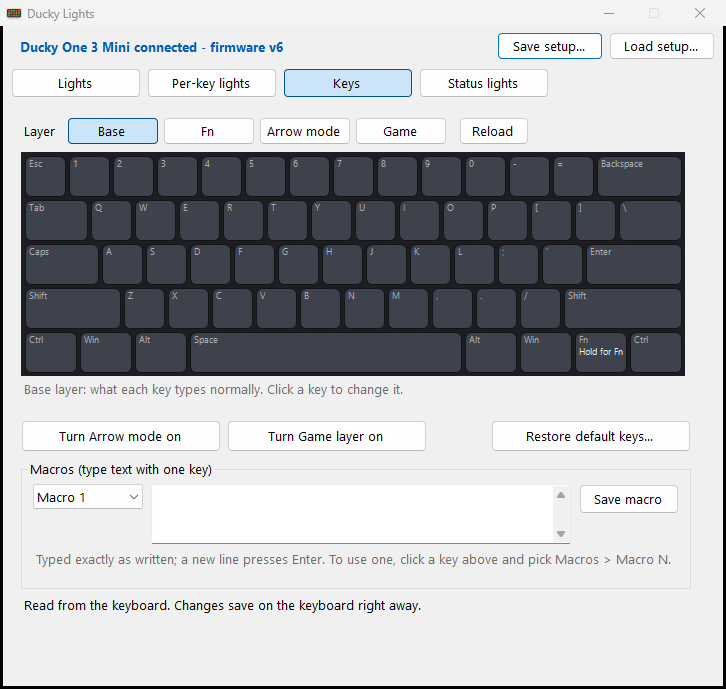
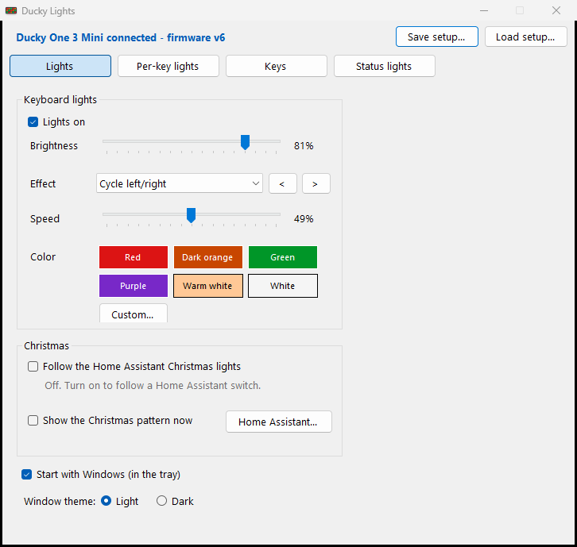
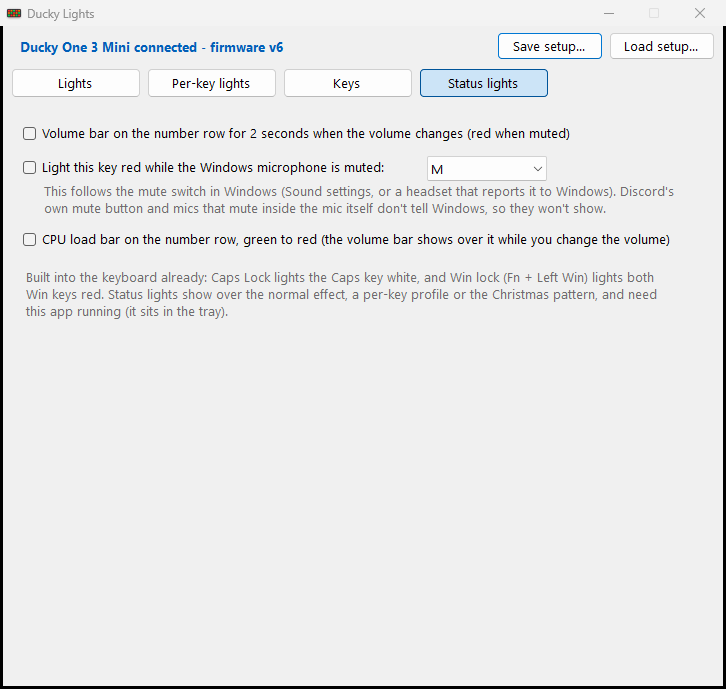

My own firmware for the Ducky One 3 Mini RGB, built on QMK, and the Windows app that goes with it: per-key lights, key remapping, macros, an arrow mode, a game layer and status lights.

Ducky doesn't make lighting software for the One 3 Mini, and its stock firmware has no way for a PC to set the key colors. So I replaced the firmware with my own QMK port, adapted from the community port of the full-size Ducky One 3, and built a Windows app for it.
The keys, the layers and the macros live on the keyboard, so they work on any computer. The app adds the things that need a PC: per-key profiles that switch with the game you're playing, a volume bar, a mic-mute light and a CPU meter.
| Keyboard | Ducky One 3 Mini RGB (DKON2161ST), 60% ANSI, 61 keys |
|---|---|
| Chip | Nuvoton NUC1261, 256 KB flash on mine |
| Lights | 67 RGB LEDs: one per key, with 5 under the spacebar and 2 each under Enter and Left Shift |
| Firmware | v6, on the keyboard since 11-24-26. Compared with v5, the Fn layer sits on top, so every Fn key also works in Arrow mode and on the Game layer, and Fn + Shift only switches a layer when you tap it alone. |
20 effects, brightness, speed and color, saved on the keyboard. A Christmas pattern can follow a Home Assistant switch.
Paint keys on a picture of the keyboard and keep them as profiles. A game's profile switches on by itself while the game runs.
Change any key on four layers. Changes are saved on the keyboard, so they work on any PC.
Fn + Right Shift turns /, Right Alt, Right Win and Right Ctrl into arrow keys, and they light up white.
Fn + Left Shift turns off the left Windows key, so a stray press doesn't pull you out of a game.
Up to 16 text macros, each typed with one key.
A volume bar on the number row, a mic-mute key and a CPU load bar, shown over the normal lighting.
One file holds the lights, every key, the macros and the profiles. Keys, macros and lights are also backed up each time you change a key or a macro.



The screenshots were taken with firmware v6 on the keyboard.
These work on any computer, with or without the app.
| Keys | What it does |
|---|---|
| Fn + Right Shift (tap) | Arrow mode on or off: / = Up, Right Alt = Left, Right Win = Down, Right Ctrl = Right. Those keys light white. |
| Fn + Left Shift (tap) | Game layer on or off: the left Windows key does nothing. Changed keys light green, keys turned off light red. |
| Fn + Left Win | Win lock: both Windows keys off, and both light red. It stays on after a replug. |
| Fn + Esc | Backtick (`), or ~ with Shift |
| Fn + 1 to = | F1 to F12 |
| Fn + Backspace | Delete |
| Fn + Q / W / E | Previous track / Play-Pause / Next track |
| Fn + A / S / D | Mute / Volume down / Volume up |
| Fn + R | Lights on or off |
| Fn + T / G | Next effect / Previous effect |
| Fn + Y / H | Brighter / Dimmer |
| Fn + U / J | Effect faster / Effect slower |
| Fn + F | Change the color (hue) |
| Fn + I / O / P | Insert / Pause / Page Up |
| Fn + [ / ] | Home / Print Screen |
| Fn + ; / ' | Page Down / End |
| Fn + K | Scroll Lock |
| Fn + L / , / . / / | Up / Left / Down / Right |
| Fn + N | Calculator |
| Caps Lock | Lights the Caps key white |
Tap means: hold Fn, then press and let go of Shift with no other key in between. With another key it's a normal Shift, so Shift + Fn + the arrow keys still selects text.
I've only tested it on my own One 3 Mini RGB (ANSI, 256 KB chip). The rest of this comes from other people's projects and Ducky's own pages, not from my testing.